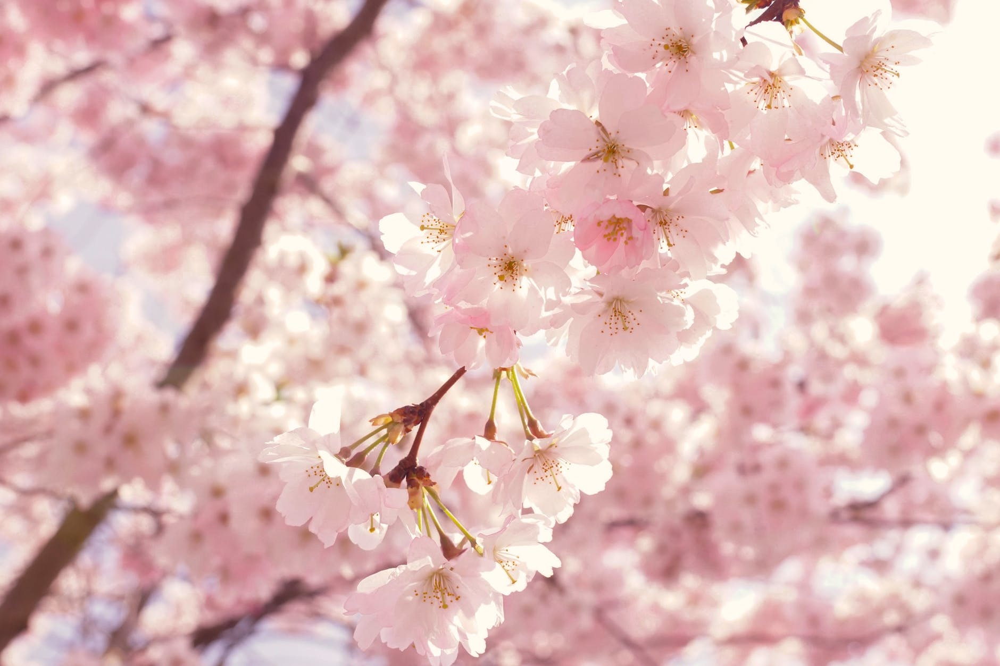
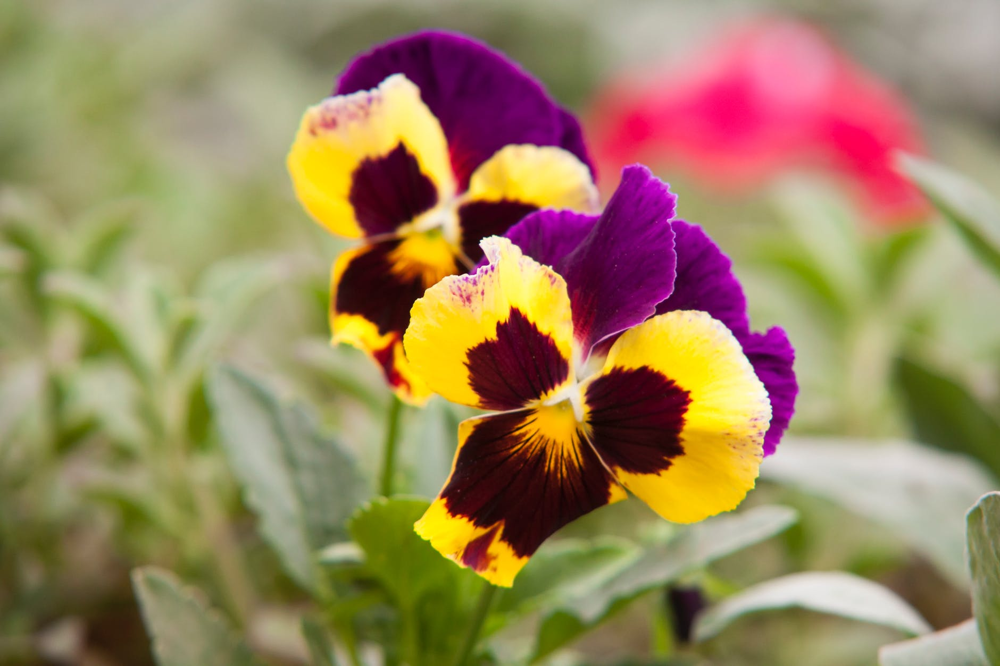
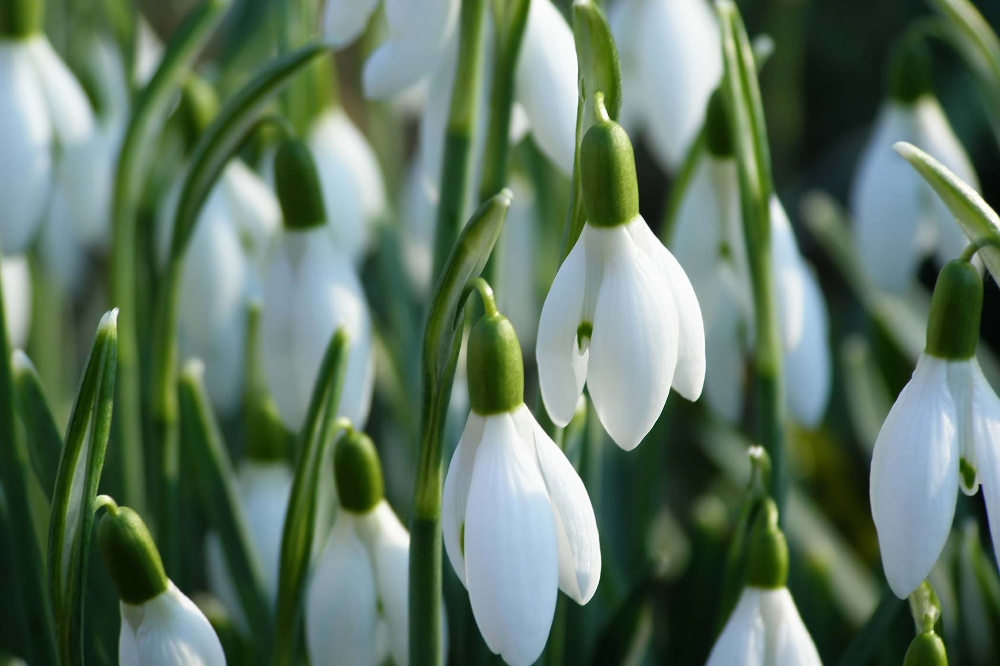
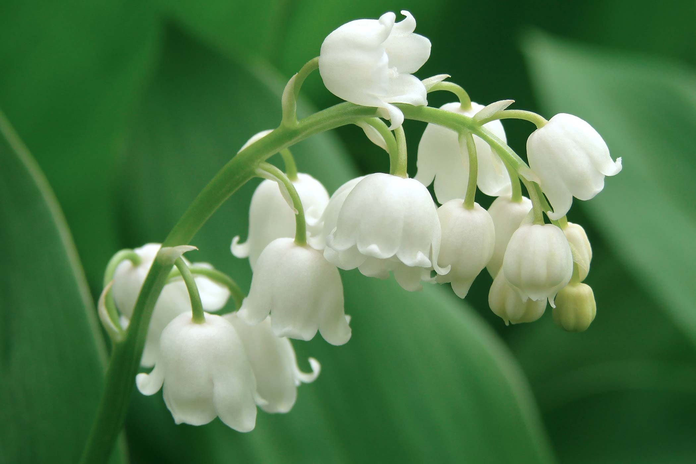

Ah, spring! The season of flowers!
From the classic tulip to the more uncommon pansy, spring may bring April showers, but with that comes May flowers, .
Some popular spring flowers include:




Spring isn't known as the season of flowers for no reason. Besides summer, it's the season that most flowers bloom and flourish, and the weather is almost always ideal for upkeep.
All pictures courtesty